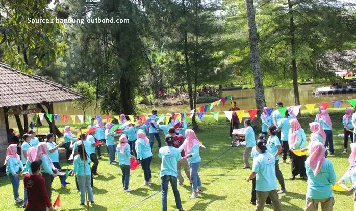
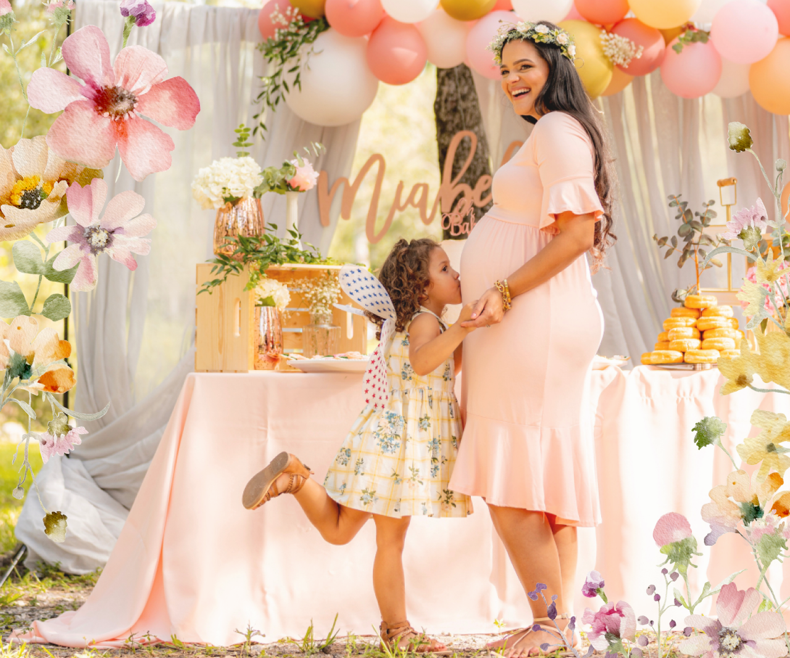
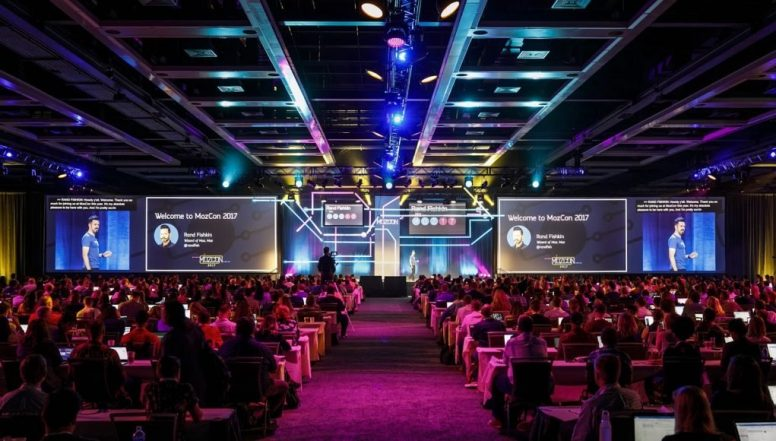

Ada banyak momen spesial dalam hidup yang pantas dirayakan dengan cara yang segar dan tak terlupakan. Apapun acaranya, satu hal yang pasti: Seroet siap bikin suasana makin hidup! 🍧✨
Yuk, cek lima momen seru yang paling cocok ditemani Seroet! baik untuk harimu sehari-hari, maupun untuk private event spesialmu!
Pesta Ulang Tahun yang Super Fun 🎂
Lagi cari cara biar pesta ulang tahun terasa lebih seru dan memorable? Bayangin, tamu-tamu datang, disambut dengan booth es serut segar dari Seroet yang warna-warni. Anak-anak sampai orang dewasa pasti langsung semangat nyobain berbagai rasa dan topping seru.
✨ Seroet menawarkan paket private event khusus birthday party, dengan custom booth dan pilihan rasa favorit!
Gathering Kantor Anti Boring 👔

Acara kantor seringkali terasa kaku dan membosankan?
Saatnya bikin suasana jadi lebih santai dan menyenangkan dengan booth es serut dari Seroet. Mulai dari farewell, outing, hingga town hall, semua bisa jadi lebih hidup dengan es serut warna-warni yang menyegarkan dan penuh nostalgia. Tim HR pun jadi punya cara baru untuk meningkatkan engagement antar tim.
✨ Seroet siap hadir di acara kantor kamu dengan konsep booth custom dan rasa-rasa yang bisa dipilih sesuai selera kantor!
Wedding Reception yang Fresh dan Berbeda 💍
Mau resepsi pernikahanmu beda dari yang lain? Sediakan Seroet sebagai dessert bar pernikahanmu yang unik!
Tamu-tamu bisa menikmati sajian es serut segar saat cuaca panas atau di tengah pesta outdoor. Pilihan topping yang cantik bisa sekalian mempercantik foto-foto dokumentasimu.
✨ Buat hari spesial kamu makin berkesan dengan Seroet Wedding Booth, seroet menyediakan opsi booth cantik yang bisa di-custom sesuai tema wedding kamu.
Baby Shower atau Bridal Shower Intimate 👶👰

Acara kecil dan intim seperti baby shower atau bridal shower butuh sentuhan manis yang personal.
Bayangkan semua orang sibuk berbagi tawa sambil memegang cup Seroet favorit mereka—segar, manis, dan penuh cinta ❤️.
✨ Perfect untuk surprise party, bridal shower, maupun baby shower dengan minimum order tertentu, Seroet siap hadir di acara private gathering kecilmu juga!
Launching Produk atau Event Promosi 🚀

Mau event launching-mu standout di mata pengunjung?
Tambahkan booth Seroet di venue!
Pengunjung akan lebih betah, interaksi jadi lebih santai, dan suasana jadi lebih fun. Plus, booth Seroet yang estetik bisa memperkuat brand image kamu.
✨ Seroet mendukung promosi brand kamu dengan pengalaman interaktif yang bisa viral di media sosial! Kami juga menyediakan opsi co-branding booth dengan logo dan warna brand kamu!
✨ Bikin Setiap Momen Lebih Segar Bareng Seroet
Mulai dari birthday party, wedding, corporate event, sampai intimate shower, Seroet siap membantu bikin acaramu lebih hidup dan memorable.
Hubungi kami untuk info lebih lengkap soal paket private event, custom rasa, dan konsep booth!
Langsung aja cek menu kita disini dan order disini